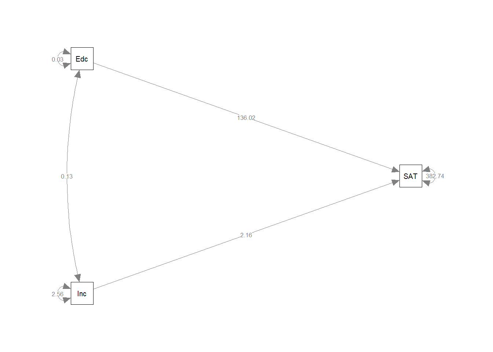

Chapter 7 Week 2 - Home
This exercise is based on Kestilä, Elina (2006) Is There Demand for Radical Right Populism in the Finnish Electorate? Scandinavian Political Studies 29(3),169-191
You have read and answered questions about the article in the reading questions. In this exercise, as well as in the second class practical, we will analyze these data ourselves.
The data for this practical stem from the first round of the European Social Survey (ESS). This is a repeated cross-sectional survey across 32 European countries. The first round was held in 2002, and since then, subsequent rounds of data-collection are held bi- anually. More info, as well as access to all data -> www.europeansocialsurvey.org.
The raw, first round data can also be found here. The file is called ESSround1- a.sav. This file contains data for all respondents, but only those variables are included that you will need in this exercise.
7.0.1 Question 1.a
Download the file, and import it in R. Inspect the file (no. of cases and no. of variables) to see if the file opened well.
For a description of all variables in the dataset, click here!
| Variable | Description |
|---|---|
| name | Title of dataset |
| essround | ESS round |
| edition | Edition |
| proddate | Production date |
| cntry | Country |
| idno | Respondent’s identification number |
| trstlgl | Trust in the legal system |
| trstplc | Trust in the police |
| trstun | Trust in the United Nations |
| trstep | Trust in the European Parliament |
| trstprl | Trust in country’s parliament |
| stfhlth | State of health services in country nowadays |
| stfedu | State of education in country nowadays |
| stfeco | How satisfied with present state of economy in country |
| stfgov | How satisfied with the national government |
| stfdem | How satisfied with the way democracy works in country |
| pltinvt | Politicians interested in votes rather than peoples opinions |
| pltcare | Politicians in general care what people like respondent think |
| trstplt | Trust in politicians |
| imsmetn | Allow many/few immigrants of same race/ethnic group as majority |
| imdfetn | Allow many/few immigrants of different race/ethnic group from majority |
| eimrcnt | Allow many/few immigrants from richer countries in Europe |
| eimpcnt | Allow many/few immigrants from poorer countries in Europe |
| imrcntr | Allow many/few immigrants from richer countries outside Europe |
| impcntr | Allow many/few immigrants from poorer countries outside Europe |
| qfimchr | Qualification for immigration: christian background |
| qfimwht | Qualification for immigration: be white |
| imwgdwn | Average wages/salaries generally brought down by immigrants |
| imhecop | Immigrants harm economic prospects of the poor more than the rich |
| imtcjob | Immigrants take jobs away in country or create new jobs |
| imbleco | Taxes and services: immigrants take out more than they put in or less |
| imbgeco | Immigration bad or good for country’s economy |
| imueclt | Country’s cultural life undermined or enriched by immigrants |
| imwbcnt | Immigrants make country worse or better place to live |
| imwbcrm | Immigrants make country’s crime problems worse or better |
| imrsprc | Richer countries should be responsible for accepting people from poorer countries |
| pplstrd | Better for a country if almost everyone share customs and traditions |
| vrtrlg | Better for a country if a variety of different religions |
| shrrfg | Country has more than its fair share of people applying refugee status |
| rfgawrk | People applying refugee status allowed to work while cases considered |
| gvrfgap | Government should be generous judging applications for refugee status |
| rfgfrpc | Most refugee applicants not in real fear of persecution own countries |
| rfggvfn | Financial support to refugee applicants while cases considered |
| rfgbfml | Granted refugees should be entitled to bring close family members |
| gndr | Gender |
| yrbrn | Year of birth |
| edulvl | Highest level of education |
| eduyrs | Years of full-time education completed |
| polintr | How interested in politics |
| lrscale | Placement on left right scale |
7.0.2 Question 1.b
The ESS-file contains much more information than we need to re-analyze the paper by Kestilä. We need to reduce the number of cases, in order to make the file more manageable, and make sure our results pertain to our target population.
Kestilä only uses data from ten countries: c("Austria", "Belgium", "Denmark", "Finland", "France", "Germany", "Italy", "Netherlands", "Norway", "Sweden").
As explained in the tutorial chapters at the beginning of this GitBook, it is possible to select rows from the data. In this case, we will select only rows from these countries by means of boolean indexing, using the %in% function to check if the value of $cntry is in the list.
Hint: Use []; %in%
7.0.3 Question 1.c
Inspect the data file again to see whether step 1b went ok.
7.0.4 Question 1.d
Before we can start the analyses, we first need to screen the data. What are the things we need to watch for? (think about your earlier statistics-courses)?
Click for explanation
This question is open to interpretation. One thing you might notice is that all variables the authors used are currently coded as factor variables (e.g., “Factor w/ 11 levels”):
## [1] "No trust at all" "1" "2" "3"
## [5] "4 " "5" "6" "7"
## [9] "8" "9" "Complete trust"In keeping with conventions, we could treat ordinal Likert scales with >5 levels as continuous. We can either re-code the data, or prevent read.spss() from coding these variables as factors when it reads the data. Here is code for both approaches.
7.0.4.1 Re-coding factors to numeric
We can convert a factor to numeric using the function as.numeric(). However, in this case, we have 38 variables to convert - that’s a lot of code.
Thankfully, there is a function to apply this transformation to each column of the data: lapply(), short for list apply. This function takes each list element (column of the data.frame), and applies the function as.numeric() to it:
7.0.4.2 Reading data without coding factors
An alternative solution is to prevent the function read.spss() from using value labels to code variables as factors when the data are loaded. However, we’re not going to use this right now, so the information below is merely illustrative:
# The option use.value.labels = FALSE stops the function from coding factors:
data <- read.spss("ESSround1-a.sav", to.data.frame = TRUE, use.value.labels = FALSE)
# Then, re-select the subset of data. The countries are now also unlabeled, so
# we select them by number:
df <- data[data$cntry %in% c(21,18,17,15,9,8,6,5,2,1), ]7.0.5 Question 1.e
Aside from screening variables by looking at summary statistics, we can also plot their distributions. You already know how to do this for one single variable.
Yet it is not very difficult to plot all variables in a data.frame.
To do this, we need to turn the data from “wide format” (one column per variable)
into “long format” (one column with the variable names, one column with the values).
The package tidyr has a convenient function to reshape data to long format:
pivot_longer().
First, make a long data.frame containing variables 7:44.
install.packages("tidyr")
library(tidyr)
df_plot <- df[7:44]
df_plot <- pivot_longer(df_plot, names(df_plot))Next, we can plot the data - using geom_histogram(), geom_density() or geom_boxplot() as before. A new additional function allows us to make separate plots for each variable: + facet_wrap(~name, scales = "free_x").
Click for explanation
library(ggplot2)
ggplot(df_plot, aes(x = value)) + geom_histogram() + facet_wrap(~name, scales = "free_x")
Notice the fact that you can see that the scales are actually categorical (because of the gaps between bars), and that most variables look relatively normally distributed despite being categorical. It’s probably fine to treat them as continuous.
7.0.6 Question 1.f
Check the scale descriptives table again. Are there any incorrectly coded missing value labels, or other inexplicable values?
7.0.7 Question 1.g
The first step in re-analyzing data is replicating the results from the paper by
Kestilä. Run a Principal Component Analysis using psych::principal(), and
choose the exact same specification as Kestilä concerning estimation method,
rotation etc. Do two analyses: one for trust in politics, and one for attitudes towards immigration. Remember that you can view the help file for psych::principal() by running
?psych::principal.
Hint: Use psych::principal()
Click for explanation
7.0.7.1 Trust in politics
Kestilä extracted three components, with VARIMAX rotation. When we print the results, we can hide all factor loadings smaller than the smallest one in their table, to make it easier to read:
library(psych)
pca_trust <- principal(df[, 7:19], nfactors = 3, rotate = "varimax")
print(pca_trust, cut = .3, digits =3)## Principal Components Analysis
## Call: principal(r = df[, 7:19], nfactors = 3, rotate = "varimax")
## Standardized loadings (pattern matrix) based upon correlation matrix
## RC3 RC2 RC1 h2 u2 com
## trstlgl 0.779 0.669 0.331 1.21
## trstplc 0.761 0.633 0.367 1.18
## trstun 0.675 0.556 0.444 1.44
## trstep 0.651 0.332 0.549 0.451 1.57
## trstprl 0.569 0.489 0.650 0.350 2.49
## stfhlth 0.745 0.567 0.433 1.04
## stfedu 0.750 0.603 0.397 1.14
## stfeco 0.711 0.300 0.616 0.384 1.44
## stfgov 0.634 0.377 0.587 0.413 1.88
## stfdem 0.369 0.568 0.325 0.564 0.436 2.38
## pltinvt 0.817 0.695 0.305 1.08
## pltcare 0.811 0.695 0.305 1.11
## trstplt 0.510 0.611 0.716 0.284 2.40
##
## RC3 RC2 RC1
## SS loadings 2.942 2.668 2.490
## Proportion Var 0.226 0.205 0.192
## Cumulative Var 0.226 0.432 0.623
## Proportion Explained 0.363 0.329 0.307
## Cumulative Proportion 0.363 0.693 1.000
##
## Mean item complexity = 1.6
## Test of the hypothesis that 3 components are sufficient.
##
## The root mean square of the residuals (RMSR) is 0.07
## with the empirical chi square 15240.94 with prob < 0
##
## Fit based upon off diagonal values = 0.967For attitude towards immigration, Kestilä extracted five components, with VARIMAX rotation:
library(psych)
pca_att <- principal(df[, 20:44], nfactors = 5, rotate = "varimax")
print(pca_att, cut = .3)## Principal Components Analysis
## Call: principal(r = df[, 20:44], nfactors = 5, rotate = "varimax")
## Standardized loadings (pattern matrix) based upon correlation matrix
## RC2 RC1 RC5 RC3 RC4 h2 u2 com
## imsmetn 0.80 0.72 0.28 1.3
## imdfetn 0.78 0.79 0.21 1.7
## eimrcnt 0.83 0.71 0.29 1.1
## eimpcnt 0.80 0.79 0.21 1.5
## imrcntr 0.83 0.75 0.25 1.1
## impcntr 0.78 0.78 0.22 1.6
## qfimchr 0.82 0.70 0.30 1.1
## qfimwht 0.76 0.65 0.35 1.3
## imwgdwn 0.81 0.71 0.29 1.2
## imhecop 0.75 0.67 0.33 1.4
## imtcjob 0.57 0.34 0.48 0.52 2.0
## imbleco 0.70 0.55 0.45 1.3
## imbgeco 0.70 0.60 0.40 1.5
## imueclt 0.57 -0.34 0.54 0.46 2.4
## imwbcnt 0.67 0.63 0.37 1.9
## imwbcrm 0.66 0.48 0.52 1.2
## imrsprc 0.61 0.44 0.56 1.3
## pplstrd 0.33 -0.54 0.46 0.54 2.2
## vrtrlg -0.35 0.46 0.41 0.59 2.8
## shrrfg 0.37 -0.35 0.42 0.58 4.1
## rfgawrk 0.61 0.40 0.60 1.1
## gvrfgap 0.69 0.56 0.44 1.3
## rfgfrpc -0.39 0.33 0.67 3.3
## rfggvfn 0.58 0.42 0.58 1.5
## rfgbfml 0.60 0.46 0.54 1.6
##
## RC2 RC1 RC5 RC3 RC4
## SS loadings 4.38 3.40 2.78 2.19 1.72
## Proportion Var 0.18 0.14 0.11 0.09 0.07
## Cumulative Var 0.18 0.31 0.42 0.51 0.58
## Proportion Explained 0.30 0.24 0.19 0.15 0.12
## Cumulative Proportion 0.30 0.54 0.73 0.88 1.00
##
## Mean item complexity = 1.7
## Test of the hypothesis that 5 components are sufficient.
##
## The root mean square of the residuals (RMSR) is 0.05
## with the empirical chi square 29520.06 with prob < 0
##
## Fit based upon off diagonal values = 0.987.0.8 Question 1.h
Extract the PCA factor scores from the results objects, and add them to the data.frame. Give the PCA scores informative names, based on your interpretation of the factor loadings, so that you understand what they summarize.
Hint: Use $; colnames(); cbind()
Click for explanation
Extracting factor scores
The factor scores are inside of the results objects. Use the $ operator to access them:
## RC2 RC1 RC5 RC3 RC4
## 1 1.9920289 1.3140238 -0.8305392 -0.06329775 -0.08837693
## 4 0.1708174 -1.2167781 -0.4974957 -0.23766146 0.67364069
## 7 -0.3580985 0.3236336 -1.5094405 -0.53052720 -2.20637993
## 14 NA NA NA NA NA
## 17 -0.1136716 -0.7869911 -1.4664715 -0.07112144 0.41078167
## 20 -0.9188606 2.8264230 -0.3477484 -0.73788338 -1.32089442We’re going to give these factor scores some informative names, and add them to our data.frame. You should give them different, informative names based on the meaning of the factors!
## [1] "RC2" "RC1" "RC5" "RC3" "RC4"7.0.9 Question 1.i
Are you able to replicate her results?
Click for explanation
No, probably not. The team of teachers was unable to reproduce this analysis, even though it should be pretty easy to do so…
7.0.10 Question 1.j
Save your syntax and bring your data and syntax to the practical on Thursday.